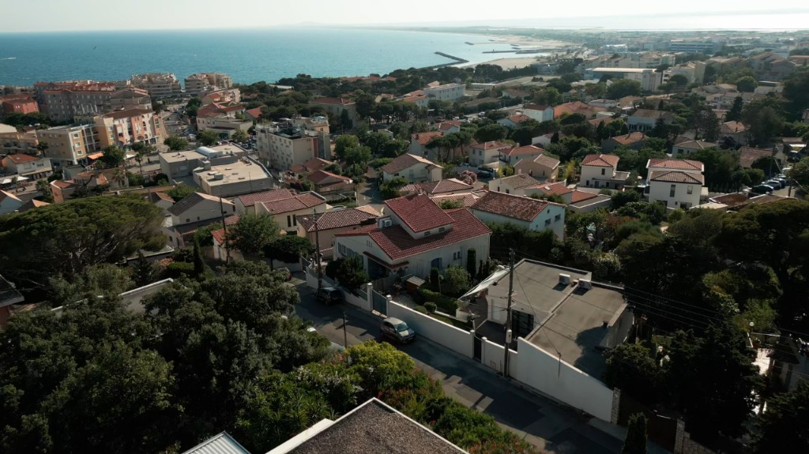

Blog · Drone
Réglementation 2026, DJI Mini 3 Pro et repères de prix.
En immobilier, les premières secondes sont décisives. Une vue aérienne apporte immédiatement ce qu'une photo au sol ne peut pas montrer : le contexte, l'environnement et les véritables volumes de la propriété. À Montpellier et dans l'Hérault, intégrer des plans aériens à votre annonce est devenu l'un des meilleurs leviers pour déclencher des visites.
Contexte et environnement — quartier, proximité des commodités, vue dégagée : l'image aérienne offre une lecture immédiate et rassurante du lieu.
Valorisation des extérieurs — jardin, terrasse, piscine, disposition de la parcelle : des éléments clés souvent impossibles à mettre en valeur depuis le sol.
Perception premium — une prise de vue stabilisée et bien cadrée donne un aspect haut de gamme à la présentation et augmente la confiance des acquéreurs.
Réaliser de belles images ne s'improvise pas. L'utilisation d'un matériel de pointe permet d'obtenir des images en très haute définition (4K) avec une stabilité à toute épreuve, garantissant des mouvements cinématographiques fluides.
La faisabilité d'un vol dépend strictement de la zone (restrictions urbaines, proximité de l'aéroport de Montpellier) et de la météo. Faire appel à un professionnel de l'Hérault garantit le respect de la législation en vigueur et l'anticipation des contraintes pour voler en toute sécurité.
Pour une efficacité maximale, nous privilégions des plans maîtrisés : une montée verticale progressive pour révéler le paysage, un travelling latéral fluide pour montrer la façade, ou un plan zénithal (vu de dessus) pour comprendre l'agencement parfait du terrain.
Bien que la captation aérienne demande une expertise technique et légale, elle reste très accessible lorsqu'elle est combinée à un reportage global. En option d'une prestation photo ou vidéo, comptez environ 70€ supplémentaires pour ajouter cette dimension aérienne qui accélérera vos demandes de visites.